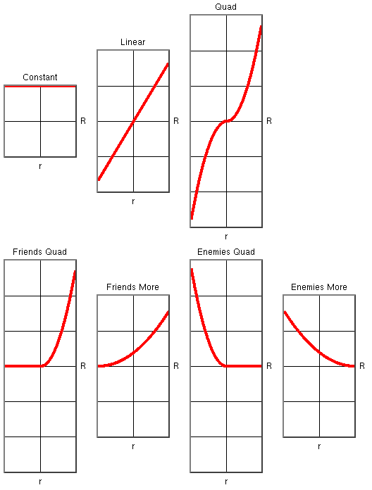
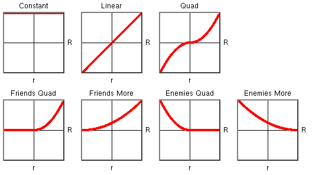

rmf(n) -- Relationship Multiplier Functions, submodule of simlib(n)
package require simlib 3.0.23 namespace import ::simlib::*
rmf(n) defines a family of "relationship multiplier functions", or "RMFs". An RMF translates an rgrouprel value, a number that ranges from -1.0 (perfect enemies) to 1.0 (perfect friends), into a multiplier. Models use RMFs to determine the magnitude of an effect based on the relationship between the affected group and the acting group.
The various RMFs are implemented as subcommands of the rmf command. Because there are many RMFs, and because the RMF to be used in a particular rule can be set in the parmdb(5), rmf is also an enum(n) of the RMF names, which are as follows:
| Index | Name | Long Name |
|---|---|---|
| 0 | constant | Constant |
| 1 | linear | Linear |
| 2 | quad | Quad |
| 3 | frquad | Friends Quad |
| 4 | frmore | Friends More |
| 5 | enquad | Enemies Quad |
| 6 | enmore | Enemies More |
rmf(n) is a parm(i), and defines the following configuration parameter. The rmf parm subcommand can be used to set and query parameter values.
rmf(n) configuration parameters.
The functions which correspond to these names are as follows, assuming that the rmf.nominalRelationship parameter is set to its default value of 0.6. Note that where the plots cross the -1.0 and 1.0 lines they do so at ±0.6
If rmf.nominalRelationship is set to 1.0, we get the RMFs used in JNEM 2.1. Note that where the plots cross the -1.0 and 1.0 lines, they do so at ±1.0.
The rmf command has all of the standard enum(n) subcommands; the following are defined as well.
In what follows, the value of the rmf.nominalRelationship parameter is indicated by Rnom.
Returns a constant 1.0 regardless of R. The "Constant" function should be used when the relationship between the two groups should have no effect.
The Rnom argument is ignored.
Returns R/Rnom. The "Linear" function should be used when the effect of an input should be directly proportional to the strength of the relationship.
If given, the Rnom argument overrides the rmf.nominalRelationship parameter.
Returns (R/Rnom)²⋅sign(R). The "Quad" function is similar to rmf linear but has a weaker effect for R < Rnom and a stronger effect for R > Rnom.
Note that friends are affected with the same sign as the input's magnitude, and enemies with the opposite sign, i.e., if friends are affected positively then enemies are affected negatively.
If given, the Rnom argument overrides the rmf.nominalRelationship parameter.
Returns (R/Rnom)² where R > 0, and 0 otherwise. Friends are affected according to the strength of the relationship, but enemies are not affected at all.
If given, the Rnom argument overrides the rmf.nominalRelationship parameter.
Returns ((1+R)/(1+Rnom))². Both enemies and friends are affected, but enemies are affected much less than friends, and perfect enemies are not affected at all.
Note that both friends and enemies are affected with the same sign as the input's magnitude; thus, if it is a positive input then both friends and enemies are affected positively.
If given, the Rnom argument overrides the rmf.nominalRelationship parameter.
Returns (R/Rnom)² where R < 0, and 0 otherwise. Enemies are affected according to the strength of the relationship, but friends are not affected at all.
If given, the Rnom argument overrides the rmf.nominalRelationship parameter.
Returns ((1−R)/(1+Rnom))². Both enemies and friends are affected, but friends are affected much less than enemies, and perfect friends are not affected at all.
Note that both friends and enemies are affected with the same sign as the input's magnitude; thus, if it is a positive input then both friends and enemies are affected positively.
This package requires Tcl 8.5 or later.
To use this package in a Tcl script, the environment variable
TCLLIBPATH must include the parent of the package
directory.
Will Duquette
Original package.
mars 3.0.23 Man page generated by manpage(n) on Fri Nov 20 09:53:55 PST 2015